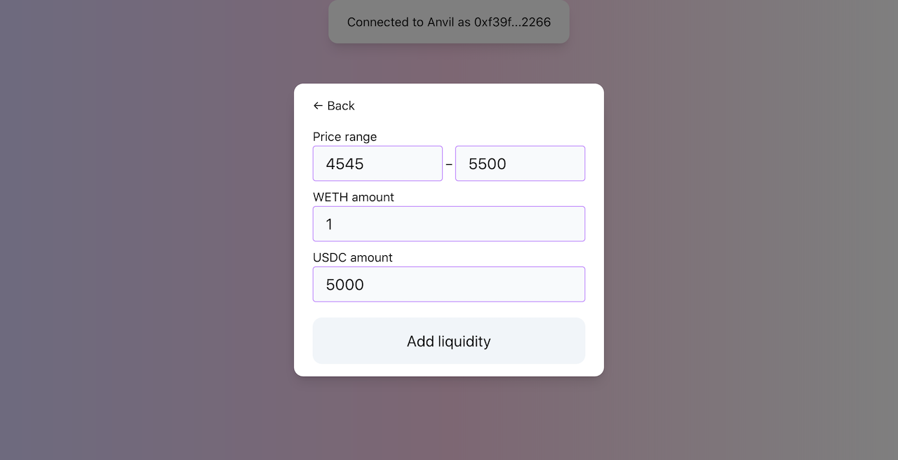
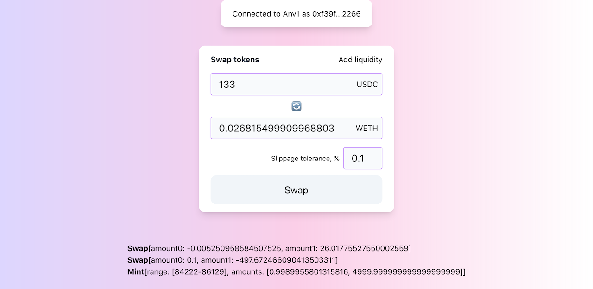

用户界面
我们现在准备好用这个里程碑中所做的更改来更新UI了。我们将添加两个新功能：
- 添加流动性对话框窗口；
- 交换中的滑点容忍度。
添加流动性对话框

这个改变将最终从我们的代码中移除硬编码的流动性数量，并允许我们在任意范围内添加流动性。
这个对话框是一个简单的组件，有几个输入框。我们甚至可以重用之前实现中的addLiquidity函数。然而，现在我们需要在JavaScript中将价格转换为价格刻度索引：我们希望用户输入价格，但合约需要价格刻度。为了简化我们的工作，我们将使用官方Uniswap V3 SDK来完成这个任务。
要将价格转换为，我们可以使用encodeSqrtRatioX96函数。该函数接受两个数量作为输入，并通过将一个除以另一个来计算价格。由于我们只想将价格转换为，我们可以将1作为amount0传入：
const priceToSqrtP = (price) => encodeSqrtRatioX96(price, 1);
要将价格转换为价格刻度索引，我们可以使用TickMath.getTickAtSqrtRatio函数。这是Solidity TickMath库在JavaScript中的实现：
const priceToTick = (price) => TickMath.getTickAtSqrtRatio(priceToSqrtP(price));
所以我们现在可以将用户输入的价格转换为价格刻度：
const lowerTick = priceToTick(lowerPrice);
const upperTick = priceToTick(upperPrice);
我们还需要在这里添加滑点保护。为了简单起见，我将其设置为硬编码值，并设定为0.5%。以下是如何使用滑点容忍度来计算最小数量：
const slippage = 0.5;
const amount0Desired = ethers.utils.parseEther(amount0);
const amount1Desired = ethers.utils.parseEther(amount1);
const amount0Min = amount0Desired.mul((100 - slippage) * 100).div(10000);
const amount1Min = amount1Desired.mul((100 - slippage) * 100).div(10000);
交换中的滑点容忍度
尽管我们是应用程序的唯一用户，因此在开发过程中永远不会遇到滑点问题，但让我们还是添加一个输入来控制交换过程中的滑点容忍度。

在交换时，滑点保护是通过限制价格来实现的——这是我们在交换过程中不希望超过或低于的价格。这意味着我们需要在发送交换交易之前知道这个价格。然而，我们不需要在前端计算它，因为Quoter合约会为我们做这件事：
function quote(QuoteParams memory params)
public
returns (
uint256 amountOut,
uint160 sqrtPriceX96After,
int24 tickAfter
) { ... }
我们正在调用Quoter来计算交换数量。
因此，为了计算限制价格，我们需要取sqrtPriceX96After并从中减去滑点容忍度——这将是我们在交换过程中不希望低于的价格。
const limitPrice = priceAfter.mul((100 - parseFloat(slippage)) * 100).div(10000);